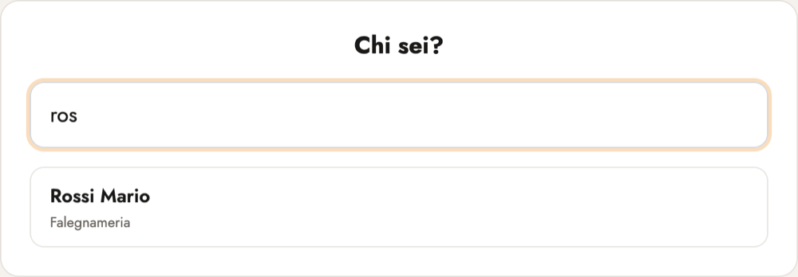
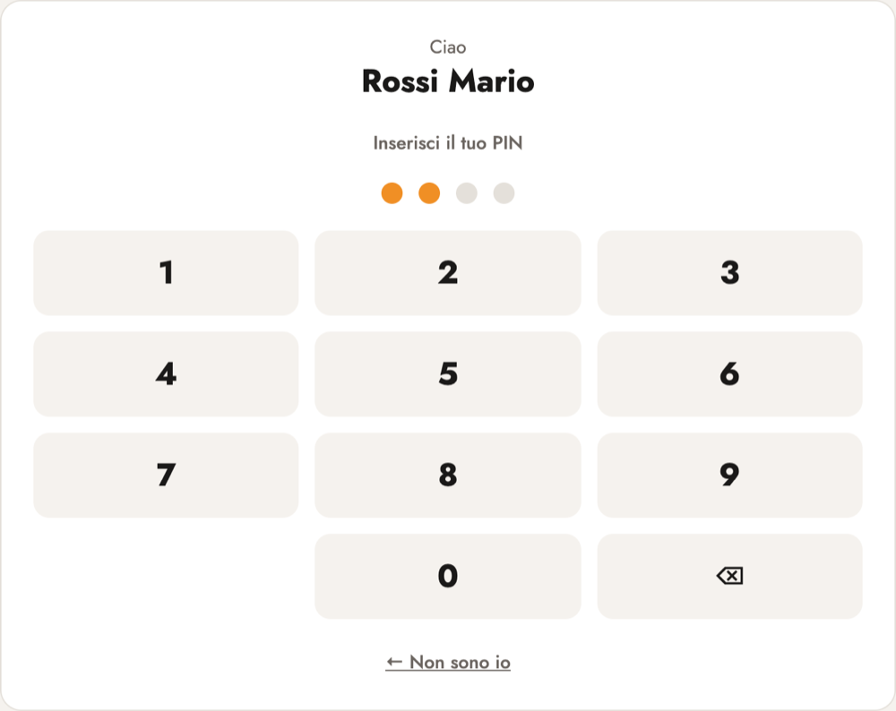
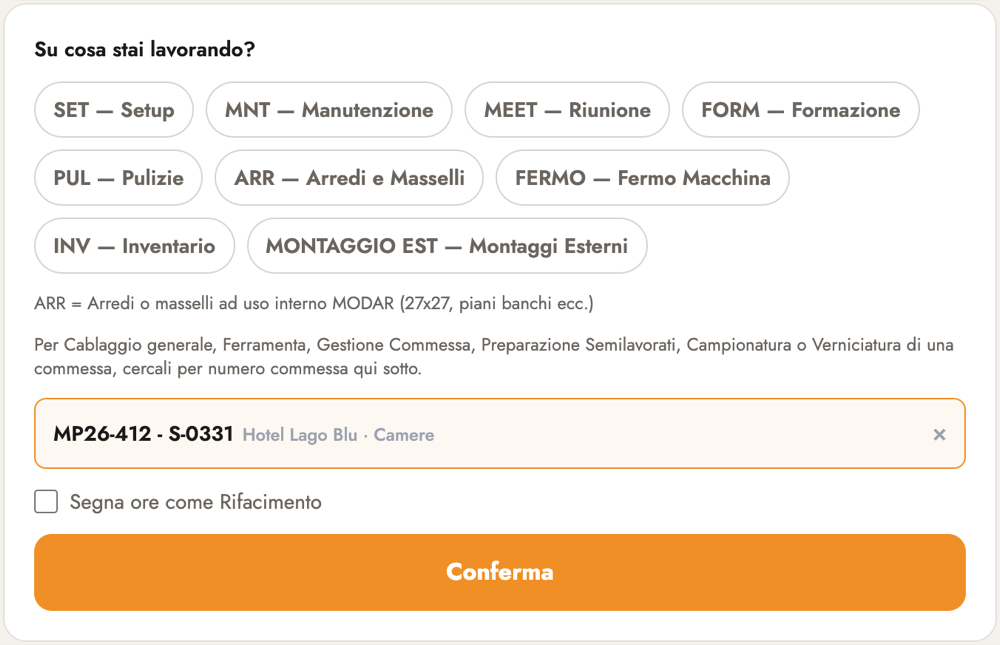
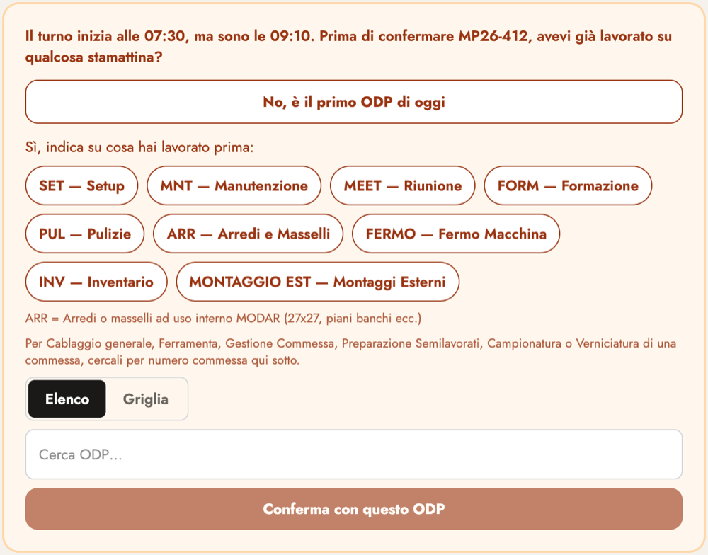
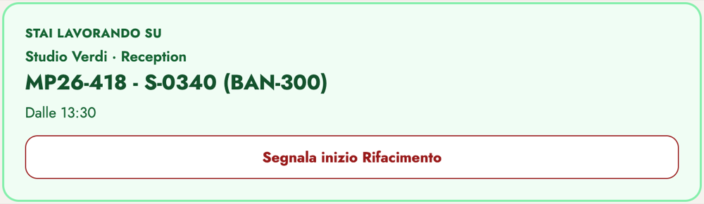
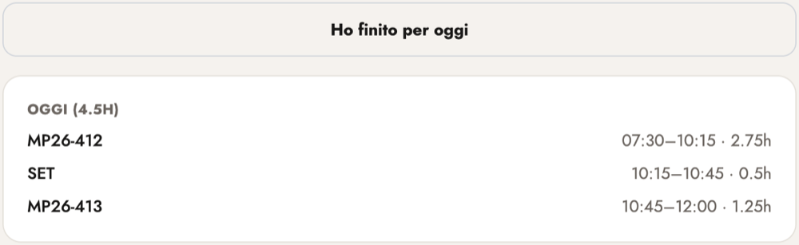
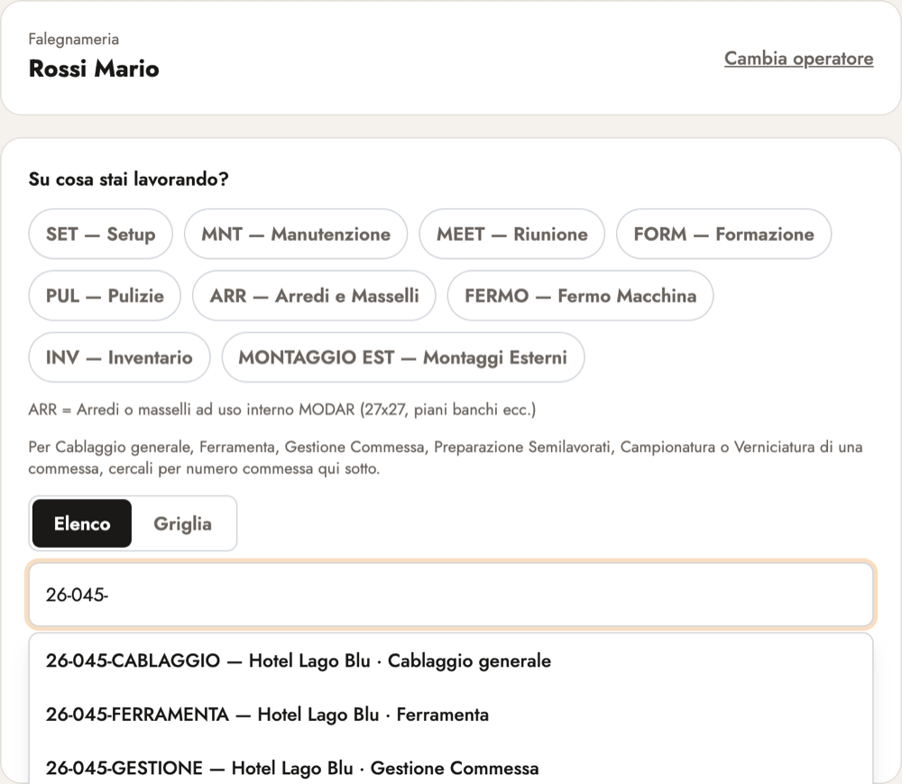
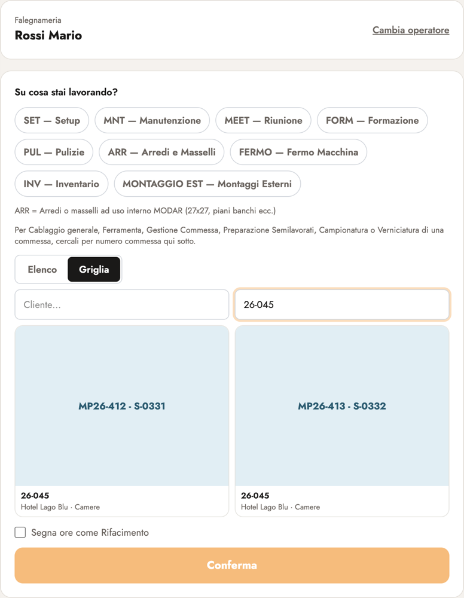

![Modar]() MES Modar · Manuale operativo · Scheda 03
MES Modar · Manuale operativo · Scheda 03
Produzione
e Responsabile Produzione
Sono i due ruoli del reparto produttivo. Condividono lo stesso perimetro di base — Commesse, Schede di Produzione (ODP), Ritiri e Consegne, Rientro Qualità — e si distinguono per le aree esclusive assegnate a ciascuno in src/lib/auth.ts. Produzione ne ha due: CARICO_ROLES = ["admin", "produzione"] apre il Carico Magazzino e FERRAMENTA_ROLES = ["admin", "magazziniere", "produzione"] apre l'intero modulo Ferramenta, a parità con admin e magazziniere. Responsabile Produzione ne ha una: RILEVAMENTO_ORE_ROLES = ["admin", "responsabile_produzione"] apre il tracciamento ore. Una terza costante, RITIRI_CREATE_ROLES = ["admin", "logistica", "produzione"], apre a Produzione — ma non a Responsabile Produzione — la sola creazione di un nuovo Ritiro o Consegna: modificarlo o eliminarlo resta riservato a WRITE_ROLES (admin e logistica). Nessuno dei due tocca Spedizione Merci o l'amministrazione.
Due ruoli, un reparto
Stesso menu di base, due chiavi diverse per le aree esclusive. Il confronto qui sotto isola dove Produzione e Responsabile Produzione divergono davvero.
Commesse · Schede ODP · Ritiri
Le tre sezioni generaliste: si leggono commesse, si segue l'avanzamento degli ODP, si vedono i movimenti di trasporto verso i fornitori esterni. Su Ritiri, Produzione può anche creare un nuovo movimento — l'unica scrittura di queste tre sezioni, dettagliata più sotto.
Rientro Qualità
Sotto-sezione di Ritiri: entrambi i ruoli compaiono in RIENTRO_QUALITA_ROLES e possono confermare il rientro di una rilavorazione, sbloccando la scheda madre.
/rientro-qualitaCarico Magazzino · Ferramenta
Le due aree esclusive di Produzione: uscita materiale interno/esterno da un lato, l'intero modulo Ferramenta — a parità con admin e magazziniere — dall'altro. Responsabile Produzione non accede a nessuna delle due.
Rilevamento Ore
L'unica area esclusiva di Responsabile Produzione: tracciamento ore, rifacimenti e KPI di reparto.
/ore| Sezione o azione | Produzione | Resp. Produzione |
|---|---|---|
| Commesse, Schede ODP, Ritiri e Consegnesola consultazione, come tutti i ruoli | ● | ● |
| Invia in RilavorazionePOST /api/schede/[id]/rilavorazione — basta la sessione | ● | ● |
| Confermare il Rientro QualitàPOST /api/schede/[id]/rientro — RIENTRO_QUALITA_ROLES | ● | ● |
| Creare un nuovo Ritiro o ConsegnaPOST /api/ritiri — RITIRI_CREATE_ROLES: admin, logistica, produzione | ● | — |
| Modificare o eliminare un Ritiro o ConsegnaPATCH/DELETE /api/ritiri/[id] — WRITE_ROLES: solo admin e logistica | — | — |
| Carico Magazzino/carico — CARICO_ROLES | ● | — |
| Ferramenta/ferramenta e sotto-sezioni — FERRAMENTA_ROLES | ● | — |
| Rilevamento Ore e sue sotto-pagine/ore — RILEVAMENTO_ORE_ROLES | — | ● |
Il bottone che non sempre scrive
Su Rientro Qualità, una rilavorazione senza ritiro concordato mostra il pulsante «Inserisci un ritiro» a chiunque veda la pagina. Il form invia a POST /api/ritiri: da quando RITIRI_CREATE_ROLES include anche "produzione", per questo ruolo il salvataggio va sempre a buon fine, come per admin e logistica. Per Responsabile Produzione, che resta fuori da RITIRI_CREATE_ROLES, il salvataggio può ancora tornare 403 Permesso negato fuori dal caso stretto già previsto per organizzare il ritiro di una rilavorazione già aperta. In alternativa resta sempre disponibile il wizard Invia in Rilavorazione sulla scheda (sezione C), che crea il ritiro con un percorso diverso.
Commesse e Schede di Produzione (ODP)
Il lavoro quotidiano condiviso da entrambi i ruoli: si legge, non si scrive — salvo le azioni specifiche descritte nelle sezioni successive.
Commesse
Elenco delle commesse con le Schede collegate. Da qui si stampano il Programma di riunione e il Gantt (entrambi generati come Excel) e si esportano CSV Commesse e CSV Carichi. Nessun campo è modificabile da questa vista.
Schede di Produzione (ODP)
La tabella degli ODP, con sottoschede e rilavorazioni annidate ed espandibili. Il dettaglio mostra dati scheda, date, produzione esterna, PDF allegati. Il pulsante Modifica ora compare anche per Produzione (MODIFICA_SCHEDA_ROLES = ["admin", "produzione"]), che può correggere qualunque campo — Responsabile Produzione resta escluso.
- Link diretto alla pagina Notion della scheda
- Filtri per stato, fornitore, commessa, ritardo produzione/rientro
- Il pulsante Invia in Rilavorazione resta accessibile — vedi sezione C
Gli stati di una Scheda
Undici valori possibili sul campo Stato Produzione. Il percorso principale è lineare; due stati sono deviazioni — la rilavorazione e l'annullamento. Attenzione alla forma esatta: è testo libero su Notion, non un enum, quindi maiuscole e minuscole contano davvero.
| Stato | Chi lo imposta | Significato |
|---|---|---|
| Da Iniziare | Import Scheda (admin) | La Scheda esiste ma la produzione non è ancora partita. |
| In lavorazione | Import Scheda; rientro rilavorazione | Produzione interna in corso. È anche lo stato in cui una Scheda torna dopo che una sua rilavorazione viene confermata rientrata. |
| In lavorazione Esterna | Carico Magazzino → Fornitore esterno | Materiale uscito verso un subfornitore per una lavorazione esterna ordinaria (non una rilavorazione per NC). |
| Materiale Pronto | Carico Magazzino → Magazzino interno | Il pezzo prodotto internamente è pronto, in attesa di spedizione. Esce dal set di ODP proponibili in Carico Magazzino. |
| Verificato | Ruolo Spedizioni | Il collo è stato controllato prima della spedizione — fuori dal perimetro di Produzione, ma visibile nel dettaglio. |
| Completato | Ruolo Spedizioni / flusso a valle | Ciclo di produzione e spedizione chiuso. |
| In Attesa Rilavorazione | Wizard rilavorazione; Carico Magazzino con NC | La Scheda madre è bloccata: una sua parte è fuori per una rilavorazione. Si sblocca solo confermando il rientro — sezione C. |
| Annullata | Modifica Scheda (admin, Produzione) | ODP annullato. Esclusa dai conteggi di ritardo e dai filtri «attivi». |
| In attesa materiale, Produzione Bloccata, Revisione UTT | Modifica Scheda (admin, Produzione) | Stati eccezionali per fermi non riconducibili a una rilavorazione formale. |
Per Responsabile Produzione nessuno stato si sceglie da un menu a tendina. Senza il pulsante Modifica, per questo ruolo lo stato avanza solo come effetto collaterale di un'azione — un carico registrato, una rilavorazione aperta o chiusa. Produzione invece ce l'ha: può assegnare uno stato qualsiasi a piacere esattamente come l'admin.
Le rilavorazioni: tre porte, un solo flusso
Una rilavorazione nasce quando un pezzo va corretto da un fornitore esterno. Il sistema offre tre modi diversi per aprirla: Produzione li può usare tutti e tre, Responsabile Produzione resta limitato al primo.
Wizard «Invia in Rilavorazione»
Dal dettaglio di una Scheda o Sottoscheda, un pulsante sempre visibile apre un piccolo wizard: descrizione del pezzo, fornitore, data di rientro attesa, eventuale annotazione sul PDF e foto. L'endpoint richiede solo una sessione valida — nessun controllo di ruolo — quindi Produzione e Responsabile Produzione lo usano senza restrizioni.
POST /api/schede/[id]/rilavorazioneCarico Magazzino con Non Conformità
Registrando un'uscita verso «Fornitore esterno» con la spunta Non Conformità attiva, il Carico non produce una semplice uscita ma una Rilavorazione — descritta nel dettaglio in sezione D.
POST /api/caricoNuovo Ritiro con NC
Dal form «+ Nuovo ritiro», la combinazione NC + Consegna + Scheda collegata crea anch'essa una Rilavorazione (vedi Scheda 02 — Operatore e Logistica). La scrittura passa da POST /api/ritiri: ora che RITIRI_CREATE_ROLES include Produzione, il pulsante «+ Nuovo ritiro» compare anche per questo ruolo in /ritiri. Per Responsabile Produzione, escluso da RITIRI_CREATE_ROLES, questa porta resta chiusa.
Qualunque sia la porta d'ingresso, da lì in poi il flusso è identico: una sottoscheda di tipologia Rilavorazione nasce agganciata alla scheda madre, la madre si blocca, il pezzo viaggia verso il fornitore ed è Rientro Qualità a chiudere il cerchio.
Nasce la Rilavorazione, la madre si blocca
Effetto immediato, qualunque sia la porta usata
Viene creata la sottoscheda «Rilavorazione NC – <scheda>» (o la descrizione inserita a mano dal wizard), con fornitore e data di rientro attesa. Finché resta aperta, la scheda madre non riprende la produzione interna.
Il ritiro concordato col fornitore
/rientro-qualita
La Rilavorazione compare nell'elenco di Rientro Qualità finché non è Completato o Annullata. Se in fase di creazione era stata spuntata la casella «Crea ritiro», il movimento di trasporto è già agganciato e mostra il proprio stato:
Senza alcun ritiro agganciato, la scheda si segnala da sola con bordo rosso e l'avviso «⚠ Nessun ritiro concordato»: sono le rilavorazioni ordinate per prime nell'elenco, perché nessuno ha ancora un impegno di trasporto col fornitore.
Rientro fisico e conferma qualità
Pulsante verde ✓ Conferma controllo qualità e segna rientrata
Quando il pezzo torna ed è stato controllato, un solo clic — da Rientro Qualità o dal dettaglio della Rilavorazione stessa — chiude il ciclo. Nessun modulo da compilare: la scheda si trasforma in una conferma verde.
POST /api/schede/[id]/rientroLa scheda madre si sblocca
Effetto automatico della conferma
La Rilavorazione passa a Completato e la scheda madre torna in In lavorazione, riprendendo esattamente da dove si era fermata. Le viste Schede si rigenerano subito, senza attendere la cache.
Chi può fare cosa, lungo l'intero anello
Produzione ora copre l'intero anello da sola: apre una rilavorazione (wizard, Carico Magazzino con NC o Nuovo Ritiro con NC), può aggiungere a posteriori un ritiro mancante su una già aperta — è in RITIRI_CREATE_ROLES — e la chiude da Rientro Qualità. Responsabile Produzione resta più limitato: apre la rilavorazione solo dal wizard e la chiude da Rientro Qualità, ma resta fuori da RITIRI_CREATE_ROLES; per aggiungere da sola un ritiro mancante su una rilavorazione già aperta può contare sul caso stretto già previsto per quella situazione, oppure appoggiarsi a logistica o a Produzione, oppure riaprire il wizard dal principio.
Carico Magazzino Solo Produzione
L'unica scrittura di questa pagina: segnala che un ODP ha materiale pronto, verso il magazzino interno o verso un fornitore esterno. CARICO_ROLES = ["admin", "produzione"] — Responsabile Produzione non vi accede.
Si sceglie l'ODP
/carico
La ricerca propone solo gli ODP con stato In lavorazione o Materiale Pronto: quelli già usciti o completati non compaiono più. Se l'ODP ha sottoschede, se ne può scegliere una singola come destinataria del movimento — altrimenti si usa la scheda principale.
Foto obbligatoria
Almeno una foto, fino a 10 MB ciascuna
Non si può registrare un carico senza almeno una fotografia del materiale. Le foto vengono allegate alla pagina Notion della Scheda e, se si crea un ritiro, anche a quella del movimento.
La destinazione decide lo stato
Due sole opzioni
Materiale Pronto
Il pezzo prodotto internamente è pronto per la spedizione. Se l'ODP ha sottoschede, una spunta permette di portare anche tutte le sottoschede allo stesso stato in un solo passaggio.
In lavorazione Esterna
Il materiale esce verso un subfornitore per una lavorazione esterna ordinaria. Compaiono i campi di un ritiro da concordare: fornitore e data di trasporto.
Il bivio della Non Conformità
Spunta Non Conformità — visibile solo con Fornitore esterno
Se il materiale esce non per una lavorazione esterna ordinaria ma perché è stato dichiarato non conforme, questa spunta cambia la natura dell'operazione: invece di una semplice uscita, il sistema crea una Rilavorazione (sezione C) e la scheda madre passa a In Attesa Rilavorazione anziché a In lavorazione Esterna.
Effetti del salvataggio
Tutti automatici, nell'ordine
- Stato della Scheda aggiornato su Notion, sempre — non dipende dalla notifica esterna
- Se richiesto, riga Ritiri e Consegne creata in automatico, con le stesse foto allegate
- Notifica Telegram all'automazione (n8n), con la prima foto in anteprima — un suo fallimento non annulla il carico, compare solo un avviso
- Le viste Schede e Ritiri vengono rigenerate subito
Una riga, due fonti di verità. L'aggiornamento dello stato su Notion è sempre sincrono e garantito; la notifica Telegram è un effetto collaterale best-effort. Se la schermata di conferma mostra un avviso, lo stato è comunque cambiato correttamente — è solo la notifica che potrebbe non essere arrivata.
Ferramenta Solo Produzione
Sette sotto-sezioni, tutte a parità con admin e magazziniere. FERRAMENTA_ROLES = ["admin", "magazziniere", "produzione"] — Responsabile Produzione non vi accede.
Da poco, parità piena
Fino a poco fa FERRAMENTA_ROLES comprendeva solo ["admin", "magazziniere"]: Produzione non aveva accesso diretto alla minuteria. Ora la costante include anche "produzione" e la voce Ferramenta compare in Navbar: stessa autorizzazione di admin e magazziniere, su ogni pagina e ogni API del modulo — nessuna sotto-sezione è più esclusa.
| Scheda | Percorso | Che cosa si fa |
|---|---|---|
| Giacenze | /ferramenta | L'elenco degli articoli attivi: codice OS1, descrizione, fornitore, metodo, giacenza, soglia minima. Ricerca libera su descrizione, codice, fornitore e codice fornitore; filtro per fornitore; interruttore Da riordinare con il contatore degli articoli sotto soglia. Gli articoli ancora senza metodo portano il badge Non classificato. |
| Anagrafica | /admin/ferramenta | Il pannello di configurazione: classificazione Kanban / A Pezzo, quantità standard vaschetta, soglia minima, ubicazione, codice fornitore, note, attivazione. Il pulsante «+ Nuovo articolo» crea una voce da zero; da qui partono anche i tre export CSV e l'importazione del catalogo da CSV. |
| Kit Ferramenta ODP | /admin/ferramenta/kit | La distinta di minuteria per commessa: riga per riga, articolo e quantità prevista. Con «Conferma Kit e notifica magazziniere» l'ODP passa a Kit Ferramenta = Si e parte la notifica con il PDF di preparazione. Vive sotto /admin/ nell'URL ma, come l'Anagrafica, non è riservato all'admin. |
| Carico | /ferramenta/carico | Registrazione dei rifornimenti: si cerca l'articolo e si indica la quantità arrivata. Su un Kanban il campo è già compilato con la quantità standard vaschetta, correggibile per le consegne parziali. |
| Inventario | /ferramenta/inventario | Sessioni di conteggio fisico per ambito — tutto il catalogo, solo Kanban, per ubicazione o solo sotto scorta. Un solo inventario aperto per volta; i differenziali rettificano la giacenza in automatico con un movimento di tipo rettifica. |
| Fogli di Scarico | /ferramenta/fogli-scarico | Il consuntivo per commessa: gli ODP con Kit Ferramenta confermato, con il confronto fra quanto pianificato in distinta e quanto realmente scaricato. Gli ODP senza alcun movimento sono marcati Senza scarico. |
| Gestione Ordini Wurth | /ferramenta/ordini-wurth | I tracciati ordine ricevuti automaticamente da n8n: le righe con prezzo da verificare o con articolo non ancora censito sono evidenziate. Da qui si segna la ricezione e la merce entra a giacenza. |
Postgres, non Notion
Anagrafica articoli, distinte Kit, movimenti e sessioni di inventario vivono su un database Postgres dedicato, interrogato in tempo reale: nessun percorso di lettura della Ferramenta passa più da Notion. Restano due sole scritture verso Notion, entrambe non critiche: il riepilogo testuale della distinta di Kit sulla scheda ODP e il flag Kit Ferramenta.
Responsabile Produzione resta fuori. La costante non lo comprende: la voce Ferramenta non compare nel suo menu e ogni pagina o API del modulo, raggiunta per link diretto, rimanda alla home.
Ore da Tablet
Pagina /operatore sul tablet di reparto. L'operatore non scrive ore: dice su cosa sta lavorando e il sistema conta il tempo. Le ore finiscono poi in Rilevamento Ore, che consulta il Resp. Produzione.
F1In breve: le cinque azioni dell'operatore
| Azione | Come | Quando |
|---|---|---|
| Entrare | Tocca il proprio nome e digita il PIN di 4 cifre | A ogni turno, o quando il tablet passa a un collega |
| Iniziare | Sceglie ODP o causale e preme Conferma | Appena prende in mano un lavoro |
| Cambiare lavoro | Sceglie il nuovo ODP e preme Conferma: il precedente si chiude da solo | A ogni passaggio, anche per pochi minuti di Setup o Pulizie |
| Rifacimento | Segnala inizio Rifacimento sulla card verde, oppure la spunta prima di Conferma | Quando rifà un pezzo già lavorato |
| Finire | Ho finito per oggi | A fine giornata. Se se ne dimentica, il sistema chiude da solo all'orario di fine turno |
F2Passo passo
Chi sei?
- Scrivere le prime lettere del cognome.
- Toccare il proprio nome (sotto c'è il reparto).

PIN
- Digitare le 4 cifre: entra da solo alla quarta.
- Nome sbagliato → ← Non sono io.
- Il PIN lo assegna l'admin in Impostazioni → PIN Operatori.
- L'accesso dura al massimo 10 ore, poi il PIN va reinserito.

Su cosa stai lavorando?
- Pulsanti tondi = causali di stabilimento (Setup, Pulizie…). Un tocco e si preme Conferma.
- Cerca ODP… = schede di produzione e causali di commessa (vedi F3).
- Griglia = stesse schede, cercate per cliente o numero commessa, a riquadri.
- La scheda scelta resta evidenziata in arancio; la × la toglie.
- Con il QR della scheda l'ODP arriva già selezionato: basta Conferma.

Domanda di inizio giornata
Compare solo se il primo ODP della giornata arriva più di 30 minuti dopo l'inizio del turno.
- No, è il primo ODP di oggi → il conteggio parte da adesso.
- Sì → indicare su cosa si è lavorato prima: quel tempo, dall'inizio turno a adesso, va su quella voce.
- Entro 30 minuti nessuna domanda: il primo ODP parte dall'inizio turno.

Durante il lavoro
- La card verde mostra cliente, ODP, scheda, articolo e l'ora d'inizio.
- Per cambiare lavoro: scegliere il nuovo ODP sotto («Passa a un altro ODP») e premere Conferma.
- Non serve chiudere niente a mano: il cambio chiude il lavoro precedente.

Fine giornata
- Ho finito per oggi chiude l'ultimo lavoro.
- Il riquadro Oggi elenca ogni lavoro con orari e ore, e il totale.
- La pausa pranzo è già tolta (qui 10:45–12:00 vale 1,25h).
- Tablet condiviso: Cambia operatore in alto prima di passarlo al collega.

F3Cosa scegliere: tre tipi di voce
Lavoro su un pezzo
Formato MP26-412. Si cerca per ODP, numero scheda o cliente.
- Compaiono le schede non annullate di commesse aperte.
- Restano scelte anche le schede (Completato) o in (Lavorazione Esterna), con l'etichetta.
Lavoro su tutta la commessa
Formato N°COMMESSA-ATTIVITÀ, es. 26-045-CABLAGGIO. Si cerca digitando il numero commessa.
- Esistono per ogni commessa non chiusa, spariscono alla chiusura.
- Le ore contano sulla commessa, non su una scheda.
Lavoro non legato a commesse
I pulsanti tondi in alto. Le ore vanno nella categoria corrispondente, non su commessa.
- Riepilogo in /ore/causali-stabilimento.
Causali di commessa
| Suffisso | Significato |
|---|---|
| -CABLAGGIO | Cablaggio generale |
| -FERRAMENTA | Ferramenta |
| -GESTIONE | Gestione Commessa |
| -SEMILAVORATI | Preparazione Semilavorati |
| -CAMPIONATURA | Campionatura |
| -VERNICIATURA | Verniciatura |

Causali di stabilimento
| Codice | Significato |
|---|---|
| SET | Setup |
| MNT | Manutenzione |
| MEET | Riunione |
| FORM | Formazione |
| PUL | Pulizie |
| ARR | Arredi e Masselli: arredi o masselli per uso interno MODAR (27x27, piani banchi…) |
| FERMO | Fermo Macchina |
| INV | Inventario |
| MONTAGGIO EST | Montaggi Esterni |

F4Rifacimenti e loro causali
L'operatore segnala
- Segnala inizio Rifacimento sulla card verde: da quel momento le ore dello stesso ODP sono rifacimento.
- Oppure la spunta Segna ore come Rifacimento prima di Conferma, se si passa a un altro ODP.
- La card verde mostra «· Rifacimento». Per tornare al lavoro normale: riconfermare l'ODP senza spunta.
Il responsabile classifica
In /ore/rifacimenti ogni ora di rifacimento riceve una causale. L'operatore non la sceglie.
| Causale | Origine del rifacimento |
|---|---|
| P | Progettazione |
| T | Taglio / Lavorazione |
| M | Materiale |
| C | Cliente |
| F | Fornitore |
| CA | Cantiere |
Costo del rifacimento = ore × €41/h.
F5Come vengono contate le ore
| Regola | Dettaglio |
|---|---|
| Orari turno | Feriale 07:30–18:00, pausa 12:00–13:30 (9h). Sabato 07:30–12:00. Si cambiano in Impostazioni → Orari Turno. |
| Pausa pranzo | Tolta in automatico nei giorni feriali, anche se il lavoro la attraversa. |
| Inizio giornata | Primo ODP entro 30 min: parte dall'inizio turno. Oltre: domanda (passo 4). |
| Quarti d'ora | Le ore si registrano a passi di 15 minuti. Il totale della giornata si arrotonda al quarto e si divide sugli ODP: prima i quarti interi, poi quelli mancanti agli ODP più vicini al quarto successivo, infine all'ultimo ODP lavorato. Così la giornata non perde minuti. In vigore da novembre 2026. |
| Chiusura automatica | Senza «Ho finito per oggi», ogni sera il sistema chiude il lavoro aperto all'orario di fine turno (18:00, sabato 12:00). |
| Oltre 12 ore | Un lavoro aperto da più di 12 ore viene contato al massimo 12h e finisce in /ore/segmenti-anomali da verificare. |
F6Dove si controllano le ore Resp. Produzione e admin
| Pagina | A cosa serve |
|---|---|
| /ore Oggi | Ore del giorno per operatore, tablet e manuali insieme. Qui si corregge a mano. |
| /ore/rifacimenti | Ore di rifacimento da classificare (P, T, M, C, F, CA). |
| /ore/segmenti-anomali | Lavori rimasti aperti oltre 12h: si verificano, si corregge in Oggi, poi si eliminano. |
| Storici | Per ODP, Commessa, Operatore, Articolo. |
| /ore/causali-stabilimento | Ore su Setup, Manutenzione, Riunione e le altre causali di stabilimento. |
| /ore/kpi · Export Excel | Sintesi per periodo, % rifacimento per reparto (verde < 5%, giallo 5–10%, rosso > 10%), export. |
F7Problemi frequenti
La scheda è annullata o la commessa è chiusa. Avvisare il responsabile; nel frattempo usare la causale di commessa giusta.
«L'ODP … non è tra quelli attivi»: stesso caso sopra. Cercare a mano o chiedere al responsabile.
Le ore sono finite sull'ODP precedente. Il responsabile le sposta in /ore Oggi.
Riprovare; se non funziona, l'admin lo reimposta in Impostazioni → PIN Operatori.
È scaduto l'accesso del tablet (non quello dell'operatore): rientrare con l'account del tablet.
Promemoria operativi
La casella giusta al momento giusto
In Carico Magazzino, «Non Conformità» compare solo scegliendo «Fornitore esterno» ed è facile dimenticarla: senza quella spunta un pezzo difettoso esce come lavorazione esterna ordinaria invece che come Rilavorazione, e la scheda madre non si blocca.
Il wizard supera i limiti del form Ritiri
Se serve creare una Rilavorazione con un ritiro collegato e non si è admin, logistica o Produzione — quindi per Responsabile Produzione — il wizard «Invia in Rilavorazione» con la spunta «Crea riga in Ritiri e Consegne» è la via che funziona sempre: passa da un percorso server diverso da POST /api/ritiri e non richiede RITIRI_CREATE_ROLES. Produzione, ora inclusa in RITIRI_CREATE_ROLES, ottiene lo stesso risultato anche dal form «+ Nuovo ritiro».
Il residuo di «Oggi» non è un vincolo
Le ore proposte per ogni operatore sono un suggerimento calcolato sulla giornata standard (9,5h di default, modificabile): restano modificabili riga per riga, e il pulsante «+» si disattiva solo quando la giornata risulta già completa.